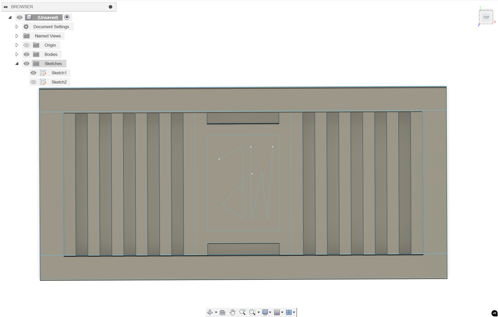

<div class="textcontainer">
<p class="margin"> </p>
<h3>Week 5: 3D Design & Printing</h3>
<h4><strong> Assignment: Model and 3D print something </strong></h4>
For this week, I designed and printed a **bottom ventilation plate** for my Smart Water Dispenser final project. It allows airflow and drainage through elongated slots so any accidental spills don't pool inside the base.
<div class="row g-3 my-3">
<div class="col-md-4">
<figure>

<figcaption class="small text-muted mt-1">Initial CAD rough draft.</figcaption>
</figure>
</div>
<div class="col-md-4">
<figure>
<img class="img-fluid rounded shadow-sm" src="./VentPlate_CAD.png" alt="Final CAD with slot pattern">
<figcaption class="small text-muted mt-1">Final CAD with parametric slot pattern.</figcaption>
</figure>
</div>
<div class="col-md-4">
<figure>
<img class="img-fluid rounded shadow-sm" src="./VentPlate_Print.jpg" alt="Printed part on build plate">
<figcaption class="small text-muted mt-1">Printed part on the build plate.</figcaption>
</figure>
</div>
</div>
### Why it’s additive-only (or hard to make subtractively)
- 2 mm ribs + < 3 mm slot spacing produce thin walls that would be fragile with drilling/milling.
- Underside fillets and integrated snap tabs complicate tool access.
- Parametric lattice makes it efficient to print flat with minimal supports.
---
### Files (downloadable)
Use the links below to grab my source model, STL, and sliced G-code.
> Tip: keep filenames versioned (e.g., `_v3`) so bench tests map to exact prints.
- <a download href="./files/vent_plate_v3.f3z">Download Fusion 360 Archive (.f3z)</a>
- <a download href="./files/vent_plate_v3.stl">Download STL (.stl)</a>
- <a download href="./files/vent_plate_v3_0p2mm_PLA.gcode">Download G-code (.gcode)</a>
> Replace `./files/...` with your actual paths/names.
---
### Print settings (snapshot)
<table class="table table-sm table-striped align-middle">
<thead><tr><th>Setting</th><th>Value</th></tr></thead>
<tbody>
<tr><td>Material</td><td>PLA</td></tr>
<tr><td>Nozzle</td><td>0.4 mm</td></tr>
<tr><td>Layer height</td><td>0.20 mm</td></tr>
<tr><td>Walls / Top / Bottom</td><td>3 / 4 / 4</td></tr>
<tr><td>Infill</td><td>20% Grid</td></tr>
<tr><td>Supports</td><td>None</td></tr>
<tr><td>Build Plate Adhesion</td><td>Skirt</td></tr>
<tr><td>Print Temp / Bed</td><td>205 °C / 60 °C</td></tr>
</tbody>
</table>
---
## 3D Scan (RevoPoint / Photogrammetry)
I captured a quick scan of the dispenser base to verify clearances.
<div class="row g-3 my-2">
<div class="col-md-6">
<figure>
<img class="img-fluid rounded shadow-sm" src="./scan_turntable.jpg" alt="Scan setup on turntable">
<figcaption class="small text-muted mt-1">Turntable scan setup with marker mat.</figcaption>
</figure>
</div>
<div class="col-md-6">
<figure>
<img class="img-fluid rounded shadow-sm" src="./scan_mesh_preview.png" alt="Watertight mesh preview">
<figcaption class="small text-muted mt-1">Watertight mesh preview after alignment & cleanup.</figcaption>
</figure>
</div>
</div>
- Workflow: **Capture → Align → Merge → Mesh → Decimate → Export (.obj/.stl)**
- Result file: <a download href="./files/base_scan_clean.stl">Download the cleaned scan (.stl)</a>
---
## Final Project: Smart Water Dispenser — Update
### Project Goals
- Reliable, touch-free water dispensing with adjustable flow rate.
- Spill-safe base with ventilation and drainage (this week's printed plate).
- OLED status (temp, fill level) + basic fault detection.
- Compact form factor safe for desk/nightstand use.
### Bill of Materials (BOM)
<table class="table table-sm table-bordered align-middle">
<thead class="table-light">
<tr>
<th>#</th><th>Item</th><th>Qty</th><th>Source</th><th>Est. Cost</th><th>Notes</th>
</tr>
</thead>
<tbody>
<tr>
<td>1</td><td>ESP32 (Seeeduino XIAO ESP32)</td><td>1</td>
<td><a href="https://www.seeedstudio.com/" target="_blank">Seeed</a></td><td>$9</td><td>Microcontroller</td>
</tr>
<tr>
<td>2</td><td>12 V Peristaltic Pump</td><td>1</td>
<td><a href="https://www.adafruit.com/" target="_blank">Adafruit</a></td><td>$15</td><td>Food-safe tubing</td>
</tr>
<tr>
<td>3</td><td>IR Distance / Time-of-Flight Sensor</td><td>1</td>
<td><a href="https://www.sparkfun.com/" target="_blank">SparkFun</a></td><td>$13</td><td>Hands-free trigger</td>
</tr>
<tr>
<td>4</td><td>OLED 0.96" I²C</td><td>1</td>
<td>Amazon</td><td>$8</td><td>Status display</td>
</tr>
<tr>
<td>5</td><td>MOSFET Driver + Flyback Diode</td><td>1</td>
<td>Lab stock</td><td>$2</td><td>Pump control</td>
</tr>
<tr>
<td>6</td><td>3D-Printed Vent Plate (this week)</td><td>1</td>
<td>Self-made</td><td>$1</td><td>PLA, 20 g</td>
</tr>
</tbody>
<tfoot>
<tr>
<th colspan="4" class="text-end">Estimated Total</th>
<th>$48</th>
<th></th>
</tr>
</tfoot>
</table>
### Timeline
<table class="table table-sm table-hover align-middle">
<thead class="table-light">
<tr><th>Week</th><th>Milestone</th><th>Status</th></tr>
</thead>
<tbody>
<tr><td>W5</td><td>Vent plate CAD → print; scan base geometry</td><td><span class="badge bg-success">Done</span></td></tr>
<tr><td>W6</td><td>Pump control electronics (MOSFET, diode, wiring)</td><td><span class="badge bg-secondary">Planned</span></td></tr>
<tr><td>W7</td><td>Firmware: sensor readout + pump PWM</td><td><span class="badge bg-secondary">Planned</span></td></tr>
<tr><td>W8</td><td>Enclosure integration & safety tests</td><td><span class="badge bg-secondary">Planned</span></td></tr>
<tr><td>W9</td><td>User testing, polish, documentation</td><td><span class="badge bg-secondary">Planned</span></td></tr>
</tbody>
</table>
### Risks & Mitigations
- **Leakage** → use peristaltic pump + silicone tubing + drip tray.
- **Noise** → elastomer mounts; low-RPM profiles.
- **Sensor mis-triggers** → debounce + confidence window + manual override.
---
### Notes to Grader
- Source model, STL, sliced G-code **are uploaded** and linked above using `<a download>…</a>`.
- Scan files and images are also included; see “3D Scan” section.
</div>